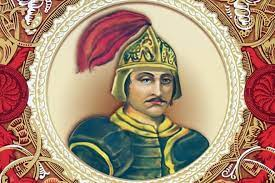

Игорь Рюрикович

Игорь Рюрикович(878—945) — киевский князь, муж княгини Ольги и отец Святослава Игоревича, согласно летописной традиции начиная с «Повести временных лет» — сын Рюрика..
Согласно «Повести временных лет», основатель древнерусской княжеской династии Рюрик умер в 879 году, передав власть и попечение над малолетним Игорем своему родичу Олегу. Когда (882) Олег покинул Новгород и подошёл к Киеву, где правили варяги Аскольд и Дир, он хитростью выманил киевских князей из города и приказал убить их именем Игоря, которого летопись называет ещё младенцем: «Не князья вы и не княжеского рода, но я княжеского рода. А это сын Рюрика».
В русско-византийском договоре 911 года Олег назван «великим князем русским», то есть в документальном источнике он считался не регентом при Игоре, а полновластным правителем.
В 903 году Игорю привели жену из Пскова, Ольгу, которой было 13 лет, а Игорю — 25. Учитывая то, что сын Игоря и Ольги Святослав родился в 942 году (Ольге было 52 года), даты выглядят крайне сомнительно. Отправившись в поход на Византию (907), Олег оставил Игоря наместником в Киеве. После смерти Олега в 912 Игорь стал правителем Киевской Руси. Даты смерти Олега и, соответственно, начала правления Игоря, условны.
В 914 году Игорь завоевал древлян и возложил на них дань больше Олеговой. В 915 году, двигаясь на помощь Византии против болгар, на Руси впервые появились печенеги. Игорь предпочёл не препятствовать им, но в 920 году сам провёл против них военный поход.
Далее исследователи отмечают пробел во всех списках Начальной летописи, совпадающий с началом княжения Игоря: «одинаково крупный перерыв на втором десятке Х-го века» до 940-х годов. После «этого времени летописная сеть всех сводов вообще совпадает». Следующее летописное известие об Игоре — его поход на Царьград 941—944 годов. С этого времени свидетельства об Игоре впервые появляются в византийских и западноевропейских источниках. Таким образом, он стал первым русским князем, названным по имени в иностранных источниках..
Подробнее